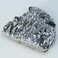

antimony

Definition: Antimony is a chemical element with the symbol Sb (from Latin: stibium) and atomic number 51. A lustrous gray metalloid, it is found in nature mainly as the sulfide mineral stibnite (Sb2S3). Antimony compounds have been known since ancient times and were powdered for use as medicine and cosmetics, often known by the Arabic name kohl. The earliest known description of the metal in the West was written in 1540 by Vannoccio Biringuccio.
Source: Wikipedia
Wikipedia Page
Wikidata Page